SMK SWASTA PEMBDA NIAS
Mewujudkan Generasi Cerdas dan Berkarakter
Mewujudkan Generasi Cerdas dan Berkarakter
SMK SWASTA PEMBDA NIAS
SIAP KERJA-SANTUN-MANDIRI-KREATIF
 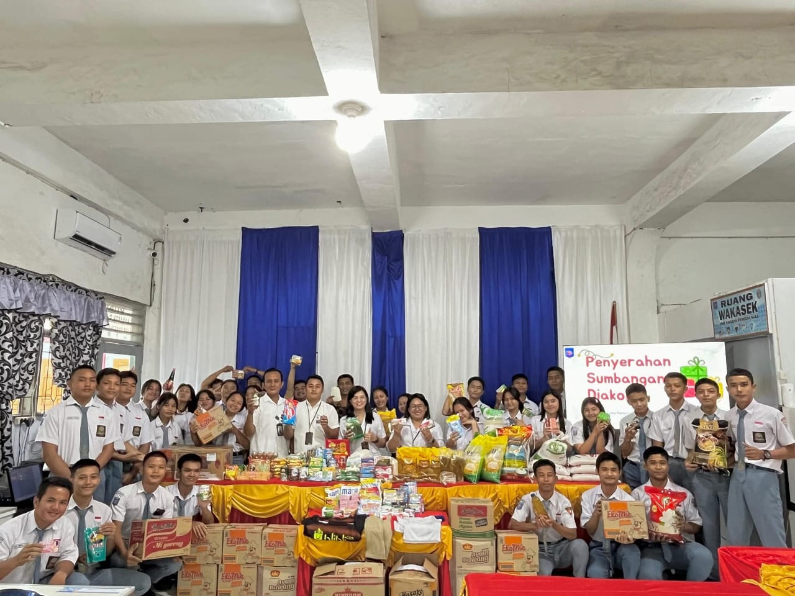
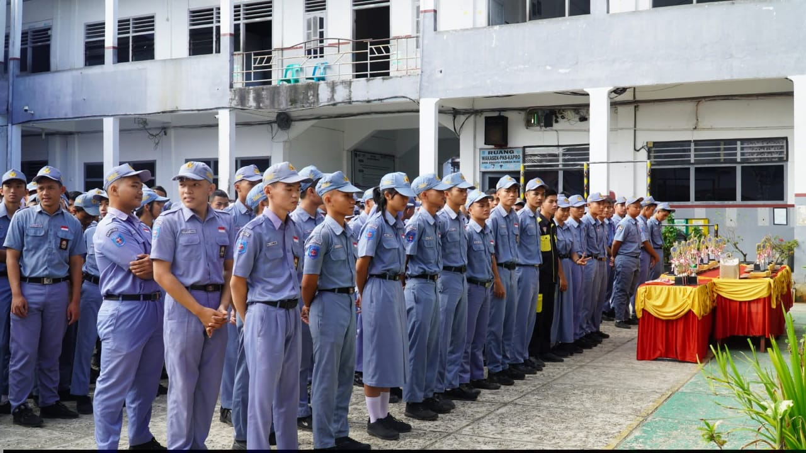
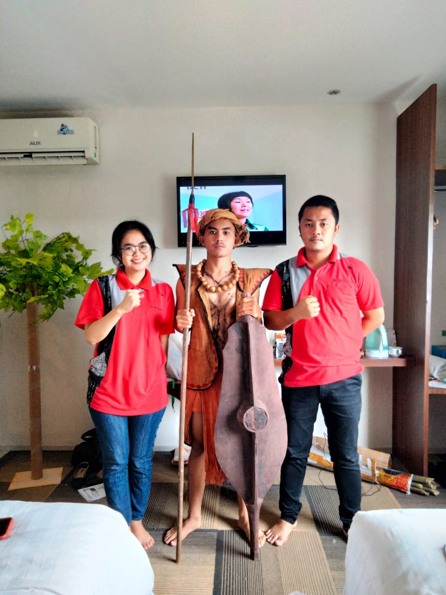
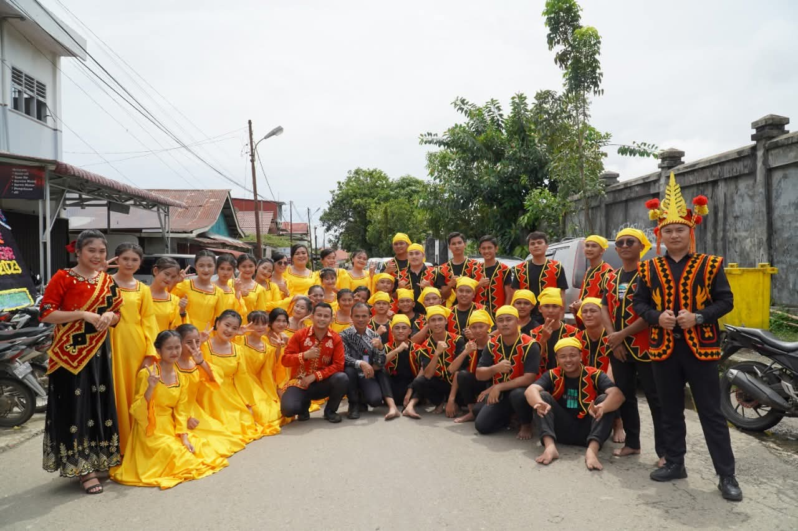
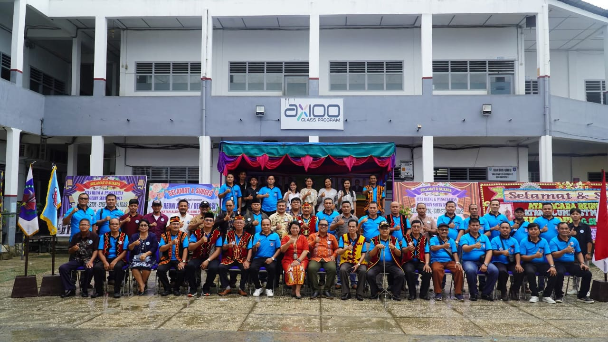
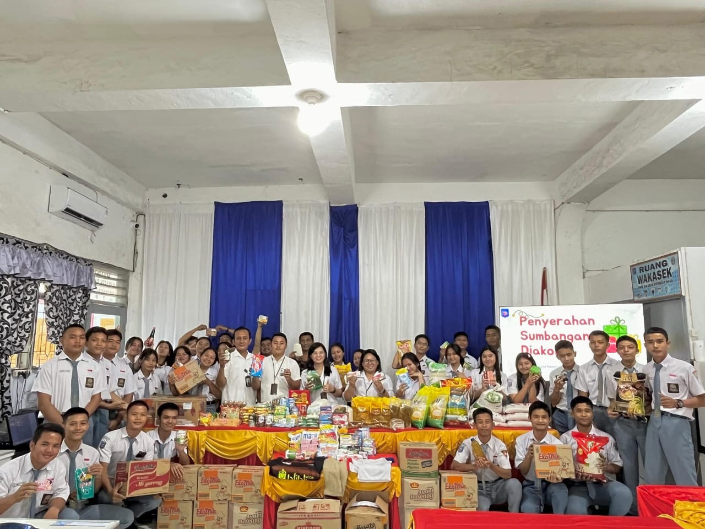
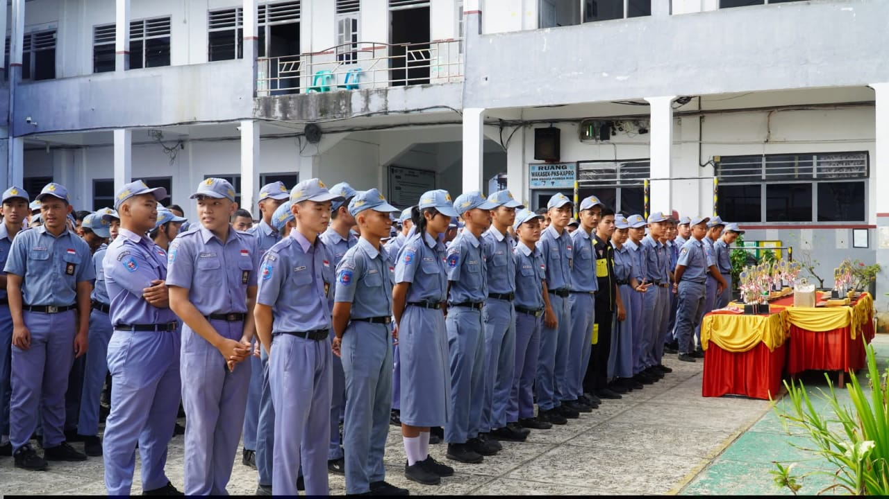
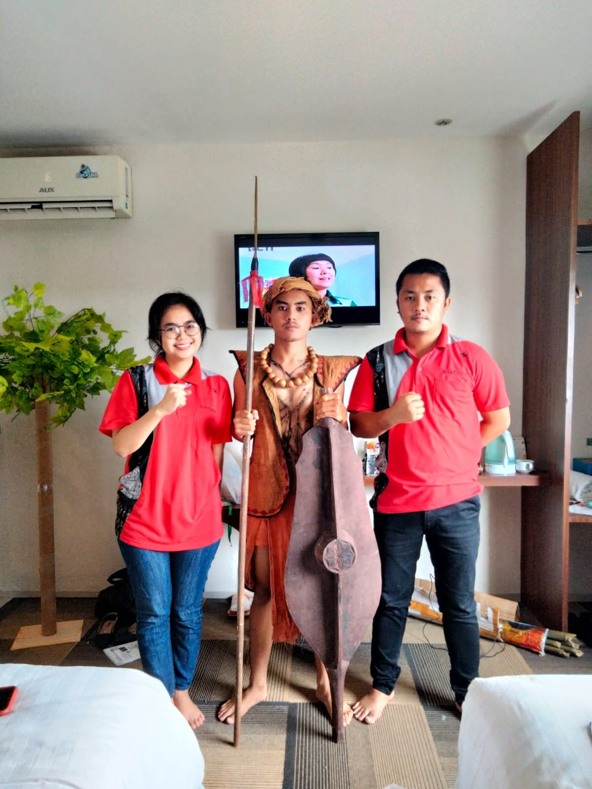
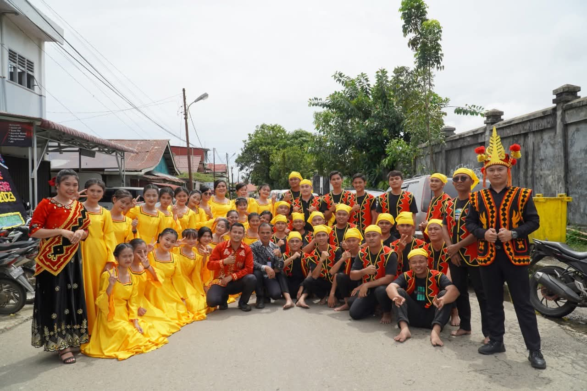
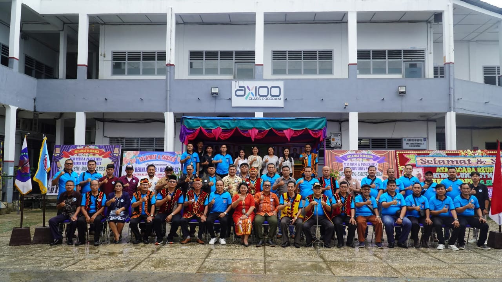

Assalamu’alaikum warahmatullahi wabarakatuh, Salam sejahtera bagi kita semua, Puji syukur kita panjatkan ke hadirat Tuhan Yang Maha Esa, karena atas rahmat dan karunia-Nya, kita dapat berkumpul pada kesempatan yang berbahagia ini. Pertama-tama, saya mengucapkan selamat datang kepada seluruh siswa, guru, staf, dan para tamu undangan di SMK Swasta PEMBDA Nias. Merupakan suatu kehormatan bagi saya bisa menyampaikan sambutan pada kesempatan ini. SMK Swasta PEMBDA Nias berdiri dengan tujuan memberikan pendidikan kejuruan yang berkualitas, mempersiapkan generasi muda agar siap menghadapi tantangan dunia kerja, serta membekali mereka dengan pengetahuan, keterampilan, dan sikap yang profesional. Sebagai Kepala Sekolah, saya menekankan pentingnya disiplin, kerja keras, dan semangat belajar yang tinggi bagi seluruh siswa. Kepada para guru dan staf, saya mengajak untuk terus meningkatkan kualitas pengajaran dan layanan pendidikan sehingga visi sekolah kita: “Menjadi sekolah kejuruan terkemuka di Nias” dapat tercapai. Akhir kata, saya berharap kerja sama yang baik antara siswa, guru, staf, dan seluruh pihak terkait akan terus terjalin, sehingga SMK Swasta PEMBDA Nias menjadi tempat yang aman, nyaman, dan produktif bagi perkembangan pendidikan. Terima kasih atas perhatian dan kerja samanya. Semoga Tuhan Yang Maha Esa selalu memberkati kita semua. Wassalamu’alaikum warahmatullahi wabarakatuh.
Sejarah : SMK Swasta Pembda Nias adalah salah satu Unit Sekolah yang dikelola oleh Yayasan Perguruan Pembangunan Daerah Nias yang berdiri sejak tahun 1969.
Mewujudkan Lulusan SMK Swasta Pembda Nias yang Berkarakter Pancasila, Berbudaya Industri dan Mampu Mengembangkan Potensi Daerah

Kepala Sekolah
Agustiani,S.Pd,M.Pd
Yaitolo Ndraha,S.Th
Wakil Kepala Sekolah

Yatafati Harefa,S.Pd
PKS
Sozaro Harefa,A.Md
Operator
Guru-guru SMK swasta pembda nias
Nama
 Juara 1 lomba olimpiade mata pelajaran bidang kimia, KAMNI UNIMED tahun 2025
Juara 1 lomba olimpiade mata pelajaran bidang kimia, KAMNI UNIMED tahun 2025

 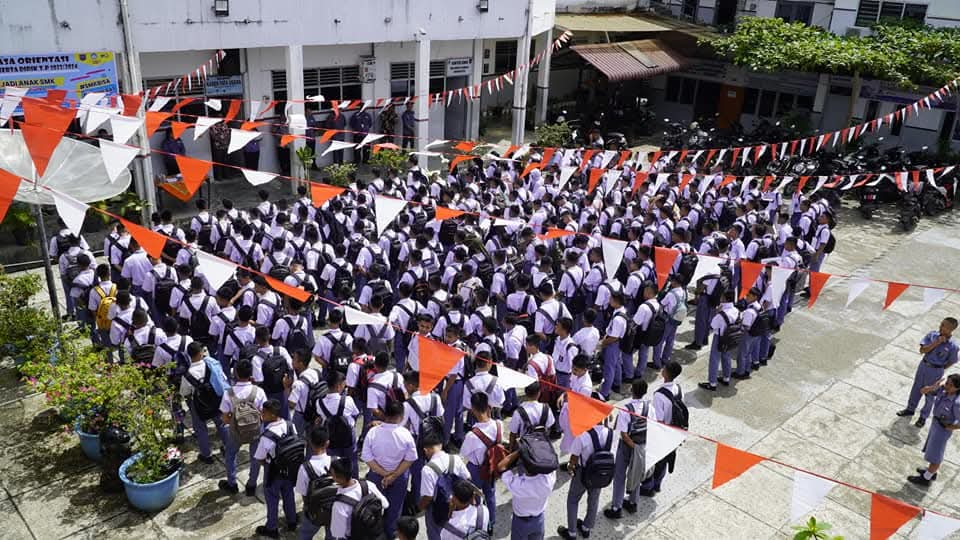
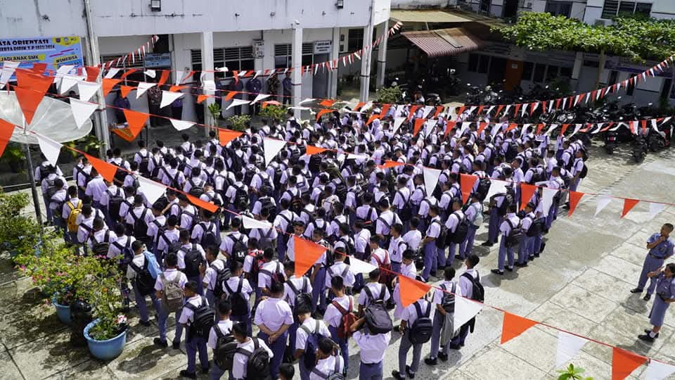
| No | Nama | Jabatan | Pendidikan Terakhir |
|---|---|---|---|
| 1 | Agustiani,S.Pd,M.Pd | Kepala Sekolah | S2 |
| 2 | Yaitolo Ndraha,S.Th | Wakasek | S1 |
| 3 | Yatafati Harefa,S.Pd | PKS | S1 |
| 4 | Firwanus Zega,S.Th | Guru | S1 |
| 5 | Wijha Almadani,S.Pd.I | Guru | S1 |
| 6 | Herman Putra Telaumbanua,S.Pd | Guru | S1 |
| 7 | Rahma Dhani Tanjung,S.Pd | Guru | S1 |
| 8 | Paniel Zebua,S.Pd | Guru | S1 |
| 9 | Markus Zebua,S.Pd | Guru | S1 |
| 10 | Resman Hendi N. Harefa,S.Pd | Guru | S1 |
| 11 | Noverius Telaumbanua,S.Pd | Guru | S1 |
| 12 | Lisa N.K Waruwu,S.Kom | Guru | S1 |
| 13 | Darius Mendrofa,S.Pd | Guru | S1 |
| 14 | Exaudi Ziliwu,S.T | Guru | S1 |
| 15 | Filiaro Hulu,S.T | Guru | S1 |
| 16 | Desman Telaumbanua,S.Pd | Guru | S1 |
| 17 | Defelinu Harefa,S.T | Guru | S1 |
| 18 | Adiyusu Zai,S.Pd | Guru | S1 |
| 19 | Yeremia. Harefa,S.Th | Guru | S1 |
| 20 | Lira Oktaviani Gea,S.Pd | Guru | S1 |
| 21 | Priska Eunike Zebua,S.Pd | Guru | S1 |
| 22 | Sabar Jaya Zalukhu,S.Pd | Guru | S1 |
| 23 | Efiyanti Waruwu,S.Pd | Guru | S1 |
| 24 | Otiani Laoli,S.Pd | Guru | S1 |
| 25 | Fider Putri Gea,S.Pd | Guru | S1 |
| 26 | Linur Arnita Lahagu,S.Pd | Guru | S1 |
| 27 | Eliasa Laia.S.Ag | Guru | S1 |
| 28 | Lisantri Warni Harefa,S.Pd | Guru | S1 |
| 29 | Safrizal Ziliwu,S.SI | Guru | S1 |
| 30 | Yelfi Deliani Zebua,S.Sos | Guru | S1 |
| 31 | Mart Peran Putra Zebua,S.T | Guru | S1 |
| 32 | Hezatulo Laoli,S.Pd | Guru | S1 |
| 33 | Solidarman Jaya Mendrofa,S.Pd | Guru | S1 |
| 34 | Agusman Jaya Telaumbanua,S.Pd | Guru | S1 |
| 35 | Julianus Tafonao,S.Pd.K | Guru | S1 |
| 36 | Hilda Natalia Hulu,S.Pd | Guru | S1 |
| 37 | Devi Asri Monika Halawa,S.Kom | Guru | S1 |
| 38 | Sondrazatulo Zebua,S.Pd | Guru | S1 |
| 39 | Sozaro Harefa,A.Md | Staf | D3 |
| 40 | Desman Jaya Zai,S.T | Staf | S1 |
| 41 | Herdiyana Lahagu,S.Ak | Staf | S1 |
| 42 | Herdiyani Lahagu,S.Ap | Staf | S1 |
42 Orang
765 Orang
100 Orang
24 Kelas
288 Orang
24 Ruang
3 Ruang
1 Ruang
Pendaftaran Online: 1 – 30 Mei 2026
Seleksi Berkas: 1 – 4 Juni 2026
Pengumuman: 10 Juni 2026
Pendaftaran Ulang: 11 – 4 Juli 2026
Pengumuman: 6 – 11 Juli 2026
Nove Telaumbanua 082262782320
Julianus Tafonao 085358148703
@smkspembdanias.sch.id
Alamat: Jl. Pelita No.9 Kota Gunungsitoli
Jl. Pelita no.9 Kota Gunungsitoli